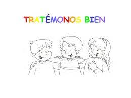

Ingles Diego Echavarria Misas
RULE #1: TREAT OTHERS THE
WAY YOU WISH TO BE TREATED:
regla #1: tratar a los demás como deseas ser tratado
Traducción

RULE #2: LISTEN TO HEAR WHAT OTHERS HAVE TO SAY, NOT TO SPEAK.
Escucha para escuchar lo que otros tienen que decir. No hablar
Traducción
RULE #3: ACCEPT DIFFERENCE OF OPINION:
aceptar la diferencia de opinión
Traducción
RULE #4: DO NOT FIGHT VIOLENCE WITH VIOLENCE:
no combatir la violencia con violencia
Traducción
RULE #5: ACCEPT THAT IDENTITY IS FLUID:
aceptar que la identidad es fluida
Traducción
RULE #6: AVOID STEREOTYPES:
evitar estereotipos
Traducción
RULE #7: APPROACH THE MEDIA WITH SKEPTICISM:
acércate a los medios con escepticismo
Traducción
RULE #8: BE CAREFUL OF THE LANGUAGE YOU USE:
ten cuidado con el idioma que usted tener puesto
Traducción
Pasado simple y pasado perfecto